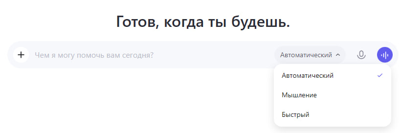
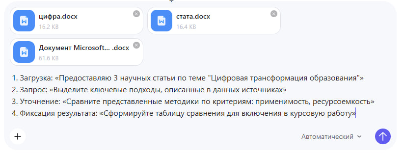
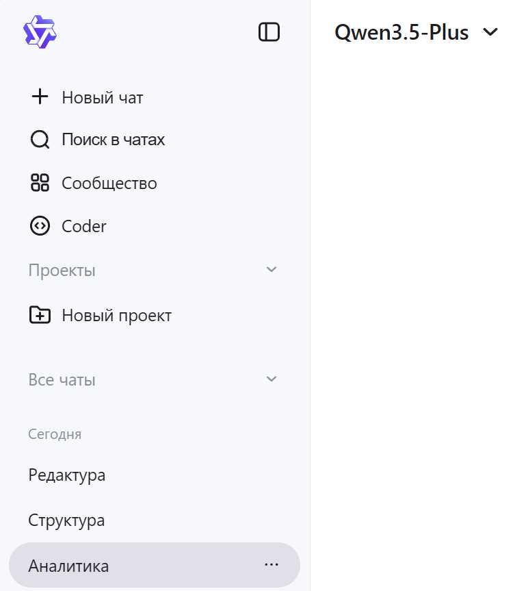

Работа с ИИ-ассистентом QWEN
QWEN — универсальный ИИ-помощник для учебной деятельности: от анализа текстов и составления планов до редактирования, академического переформулирования и работы с файлами.
О сервисе
QWEN — это мощная языковая модель, доступная бесплатно через веб-интерфейс. Она умеет анализировать тексты, писать планы, переформулировать материал в академический стиль и работать с загруженными файлами.
Данный инструмент можно использовать на всех этапах учебной работы: от поиска идей и подготовки структуры до финальной редактуры текста.
QWEN предлагает несколько режимов работы, включая быстрый, мышление и автоматический, а также выбор различных моделей под разные задачи.
Сервис хорошо понимает русскоязычные академические тексты и, в отличие от некоторых зарубежных аналогов, стабильно работает с учебными материалами на русском языке.
Дополнительным преимуществом является возможность загружать файлы непосредственно в чат, что позволяет работать с материалами без необходимости вручную копировать текст.
Базовые принципы взаимодействия
Работа с ИИ-ассистентом осуществляется через веб-интерфейс. Основные элементы интерфейса представлены на рисунке ниже.

Левая панель навигации
На левой панели расположены основные инструменты управления:
– «Новый чат» — создание новой сессии диалога;
– «Поиск в чатах» — поиск по истории взаимодействий;
– «Проекты» — организация тематических рабочих пространств;
– «Coder» — специализированный режим для работы с кодом.
Центральная область
В центральной части интерфейса находятся:
– поле ввода запросов — основная зона для постановки задач;
– кнопка отправки — запуск генерации ответа.
Выбор режима генерации
Интерфейс QWEN предоставляет возможность выбора режима работы. Это позволяет адаптировать поведение модели под конкретную учебную задачу.

«Автоматический» — система самостоятельно определяет наиболее подходящий режим работы в зависимости от характера запроса.
«Мышление» — режим расширенного анализа, при котором задача рассматривается более глубоко и последовательно.
«Быстрый» — режим оперативной генерации ответа без дополнительной детализации.
Выбор языковой модели
QWEN функционирует на базе семейства языковых моделей Qwen3.5. Пользователю доступен выбор конкретной модели в зависимости от поставленной учебной задачи.

Qwen3.5-Plus — универсальная модель для текстовых и мультимодальных задач.
Qwen3.5-Flash — высокопроизводительная модель, ориентированная на быстрое выполнение запросов.
Qwen3.5-Omni-Plus — наиболее мощная мультимодальная модель, подходящая для более сложных задач.
Также могут быть доступны специализированные версии с открытым исходным кодом, включая модели 397B-A17B, 122B-A10B, а также более ранние версии.
Структура эффективного запроса
Для получения качественных и полезных результатов при работе с QWEN рекомендуется формулировать запросы по определённой структуре.
Чем точнее пользователь задаёт контекст, задачу, ограничения и формат ответа, тем выше вероятность получить корректный и пригодный для учебной работы результат.
| Элемент | Описание | Пример формулировки |
|---|---|---|
| Контекст | Указание дисциплины, уровня подготовки и цели запроса | «В рамках курса "Методология научных исследований", уровень – бакалавриат, 2 курс» |
| Задача | Чёткое описание требуемого действия | «Необходимо составить план аналитического обзора по теме...» |
| Ограничения | Требования к объёму, стилю и источникам | «Объём – до 1500 знаков, стиль – академический, без использования непроверенных источников» |
| Формат | Предпочтительная форма представления ответа | «Ответ представить в виде нумерованного списка с краткими пояснениями» |
Использование данной структуры позволяет уменьшить вероятность получения слишком общего, неточного или плохо оформленного ответа.
На практике особенно важно не ограничиваться короткими фразами, а задавать запрос так, как если бы вы формулировали техническое задание исполнителю.
Пример корректно сформулированного запроса в интерфейсе QWEN представлен ниже.

Работа с учебными материалами
При работе с QWEN особенно важно правильно организовать загрузку и анализ учебных материалов. От структуры документов и порядка взаимодействия с ассистентом зависит качество итогового результата.
Для повышения эффективности рекомендуется соблюдать следующие правила при подготовке и загрузке документов.
Материалы целесообразно подготавливать тематическими группами, по 3–5 файлов на одну рабочую сессию.
Каждый файл должен иметь понятное и содержательное название, отражающее его тему или назначение.
При загрузке источников рекомендуется кратко обозначать цель их анализа.

После обработки загруженной группы материалов целесообразно запросить у ассистента краткое резюме, выводы или структурированный итог.
Ниже представлен пример рекомендуемой последовательности взаимодействия с ассистентом при работе с учебными материалами.
Загрузка материалов:
«Предоставляю 3 научных статьи по теме "Цифровая трансформация образования"»
Первичный аналитический запрос:
«Выделите ключевые подходы, описанные в данных источниках»
Уточнение и сравнение:
«Сравните представленные методики по критериям: применимость, ресурсоёмкость»
Фиксация результата:
«Сформируйте таблицу сравнения для включения в курсовую работу»

Оптимизация запросов
При использовании нейросети QWEN качество получаемого результата напрямую зависит от того, насколько точно, понятно и подробно сформулирован запрос.
Если запрос слишком общий, краткий или не содержит конкретной цели, нейросеть может выдать поверхностный, неполный или недостаточно полезный ответ.
Примеры менее удачных и более эффективных формулировок представлены в таблице ниже.
| Не рекомендуется | Рекомендуемая формулировка |
|---|---|
| «Расскажи про маркетинг» | «Предоставьте структурированный обзор основных концепций маркетинга для подготовки к семинару по дисциплине "Основы менеджмента"» |
| «Проверь текст» | «Выполните лингвистический анализ текста на соответствие академическому стилю: укажите стилистические ошибки, тавтологии, нарушения логики изложения» |
| «Найди источники» | «Сформулируйте поисковые запросы и ключевые слова для подбора научной литературы по теме Х в базах данных eLibrary, Scopus» |
Для повышения эффективности взаимодействия с QWEN рекомендуется соблюдать следующие принципы.
Формулировать запросы максимально чётко и понятно.
Указывать конкретную задачу, которую необходимо выполнить.
Задавать желаемую структуру ответа.
При необходимости разбивать большую задачу на несколько последовательных запросов.
Использовать уточняющие запросы для доработки результата.
Внимательно проверять полученную информацию перед использованием в учебной работе.
Модели организации сессий
Эффективность работы с ИИ-ассистентом во многом зависит не только от содержания запросов, но и от того, как организована сама логика взаимодействия.
Для учебной деятельности можно выделить две основные модели организации сессий.
«Единый контекст»
Данная модель применяется для последовательной работы над одним проектом в рамках одного чата.
Её преимуществами являются сохранение истории диалога, целостность контекста и возможность поэтапного развития темы без потери промежуточных результатов.
Рекомендация: для навигации внутри такого чата удобно использовать служебные маркеры, например: [СТРУКТУРА], [АНАЛИЗ], [РЕДАКТУРА], [ПРОВЕРКА].
«Разделение по задачам»
Данная модель предполагает использование отдельных чатов для разных типов учебной деятельности.
| Тип сессии | Функция ассистента | Тип загружаемых материалов |
|---|---|---|
| Аналитическая | Обработка источников, выявление закономерностей | Научные статьи, статистические данные |
| Структурная | Разработка планов, схем, логики изложения | ТЗ, требования, примеры работ |
| Редакционная | Корректировка текста, проверка стиля и грамматики | Черновики, методические указания |
На рисунке ниже представлен пример организации рабочего пространства посредством создания нескольких тематических чатов.

Чат «Анализ источников» — используется для обработки научной литературы, выявления ключевых концепций и закономерностей.
Чат «Структура работы» — применяется для разработки плана, логики исследования и схемы изложения материала.
Чат «Редактура» — используется для проверки черновиков на соответствие академическим стандартам, исправления стилистических и грамматических ошибок.
Такая организация позволяет сохранять контекст по каждому направлению работы, избегать смешения разных учебных задач, быстро возвращаться к предыдущим этапам и систематизировать историю взаимодействий с ассистентом.